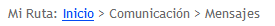
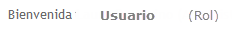
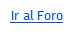
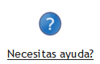
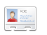
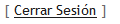

Todas las paginas del sistema muestran el mismo encabezado, el cuál cuenta con funcionalidades comunes a todos los usuarios registrados. A continuación se detallan las opciones a las que se puede acceder y la información que podemos encontrar en el mismo.
 Ruta de Navegación

Se muestra la ruta de las distintas secciones por las que ha navegado el usuario para llegar a la página actual. Como ejemplo se muestra Inicio > Comunicación > Mensajes
|
 Usuario y Rol

En el centro de la pantalla y a continuación del mensaje de Bienvenida, se muestra el nombre completo de la persona logueada y entre parentésis el rol-perfil que la misma tiene asignada. En función de este rol, el usuario tendrá permiso para acceder o no a determinadas funcionalidades y secciones del sistema.
|
 Acceso al Foro

Mediante esta opción, el usuario podrá acceder directamente a una plataforma de soporte a discusiones y opiniones en línea (Foro), la cual permitirá una mayor interacción entre todos los usuarios del sistema.
|
 Acceso a Ayuda

En esta sección se accede a la presente ayuda.
|
 Cuenta

Realizando un click sobre la imagen precedente, el sistema mostrará una ventana con las siguientes opciones para la gestión de la cuenta personal del usuario:
|
 Cerrar Sesión

Esta opción desloguea al usuario actual, modificando las opciones de menú y encabezado disponibles, y lo redirige a la página de Login para ingresar nuevamente si lo desea.
|
|